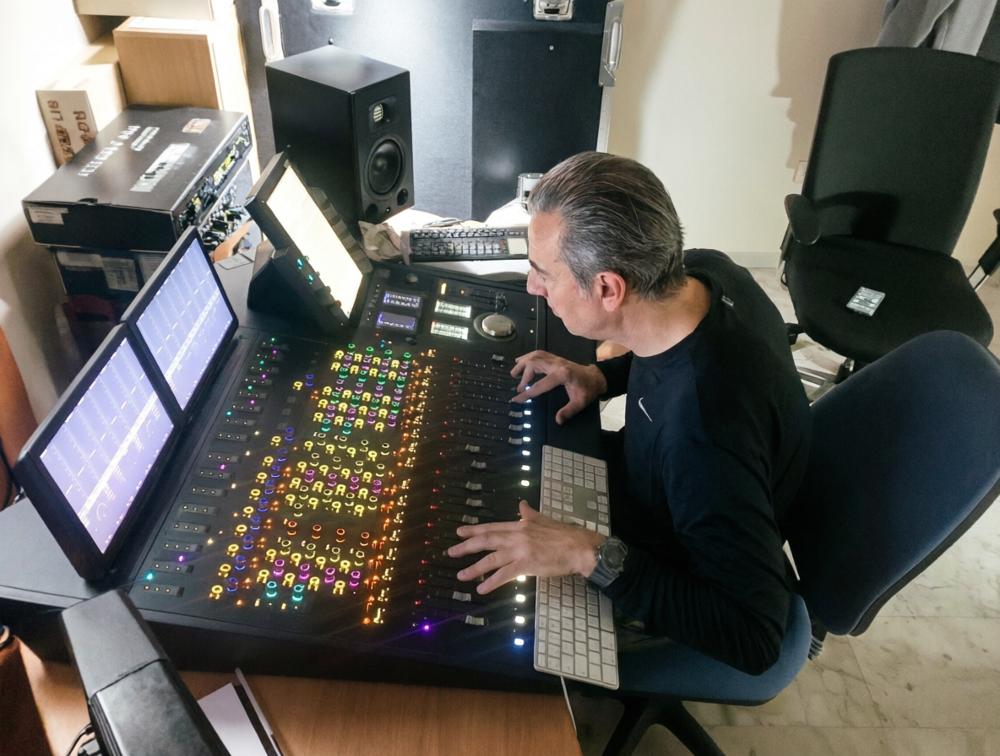
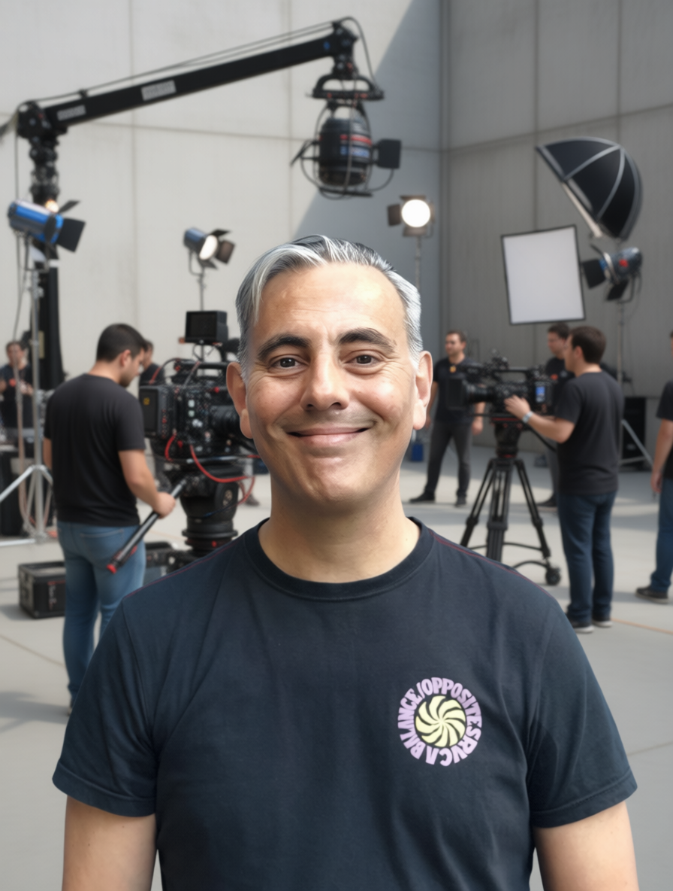
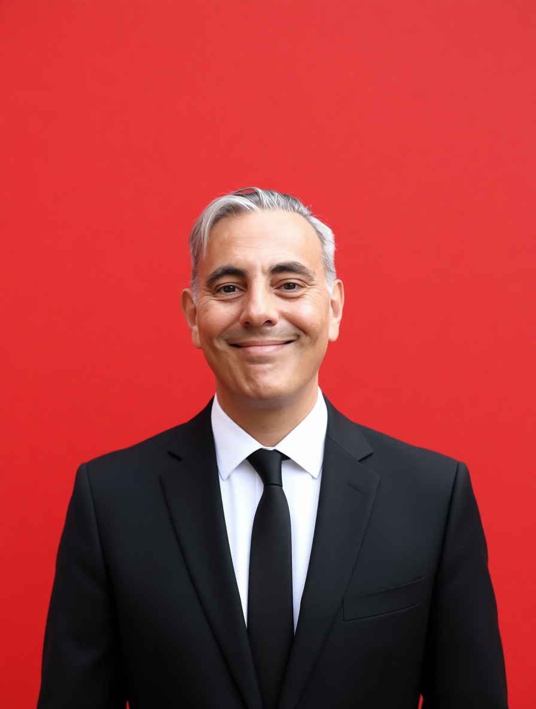

Audiovisual Systems Architect& Especialista en Integración de IA Generativa
Fusión estratégica entre la ingeniería de sonido analógica y la vanguardia de la IA Generativa. Tres décadas liderando infraestructuras críticas en cine, TV y entornos urbanos.
Acreditación Oficial Grado SuperiorDesarrollador Web Apps APIOperador de Continuidad & CCUSocio Activo SGAE / AISGE / AEDYP / AIE
El liderazgo en la industria audiovisual contemporánea exige una simbiosis perfecta entre el oficio técnico tradicional y la maestría en el gobierno de algoritmos. El verdadero valor surge cuando la experiencia acumulada en entornos analógicos reales se transfiere al entrenamiento y dirección de redes neuronales de última generación.
Mi trayectoria une de forma orgánica ambos mundos. He formado parte de los cimientos mismos de la cultura urbana en España: desde registrar el primer LP de Rap editado íntegramente en el país con BZN MCs, hasta cofundar la escena de la música avanzada nacional participando activamente en el primer Festival Sónar en 1994. He operado en la máxima franja de audiencia televisiva diaria controlando el sonido directo y el montaje musical durante 16 años y 8 temporadas consecutivas en Gestmusic Endemol, y he auditado, restaurado y masterizado audio para las plataformas de streaming globales más exigentes del mundo, como Netflix, HBO, Amazon Prime y cadenas públicas como TV3 y TVE1.
No me limito a adoptar la tecnología emergente de manera superficial; diseño la arquitectura técnica subyacente que la domina, asegurando un estándar óptimo de emisión, estabilidad absoluta en entornos en vivo y un riguroso blindaje jurídico.
02

Lab Prototyping
Ecosistema de Desarrollo Propio y Automatización
Diseño e integración de ecosistemas de software propietario mediante arquitecturas API y modelos avanzados de procesamiento multimedia. Tres años de I+D aplicados a la automatización de flujos complejos en productoras, sistemas de audio forense y entornos cinematográficos de alto rendimiento.
Cinema Generator Pro Studio
v2.0 Beta (Dic 2024)
Motor de generación cinemática masiva asistida por IA. Estructuración y renderizado secuencial de planos de alta fidelidad visual basados en prompts técnicos estructurados.
Reducción del 65% en tiempos de previsualización y desarrollo de layouts visuales para ficción.
Voznova Producer
v1.2 Stable (2025)
Suite especializada en producción, procesamiento y optimización sonora avanzada mediante algoritmos neurales de aislamiento tímbrico.
Restauración automatizada de archivos de audio dañados con preservación estricta de armónicos.
Script Writer Pro
v1.5 Enterprise
Entorno avanzado de guionización profesional y análisis de estructura dramática basado en modelos LLM con parámetros de restricción narrativa.
Automatización de escaletas, formatos estándar de guion cinematográfico y control de ritmo métrico.
Casos de Estudio Destacados
1. Dirección Técnica en Cine Asistido — Proyecto “Alpha Berracos”: Despliegue de un flujo de trabajo híbrido integral donde la IA actúa como vector de aceleración en la generación de entornos visuales dinámicos, diseño conceptual de personajes y continuidad estricta de guion, logrando un estándar cinematográfico de alta fidelidad optimizado para distribución digital masiva.
2. Preservación Biométrica Neural — Proyecto LEGADO_JFB: Desarrollo de un flujo de trabajo forense de audio avanzado para el entrenamiento y clonación neural legítima de voz. A partir de cintas analógicas y masters históricos, se realiza un meticuloso proceso de limpieza, eliminación de ruido de fase y reconstrucción espectral. El clon resultante opera bajo los estrictos parámetros éticos y legales de la EU AI Act y bajo la soberanía de derechos gestionada por AISGE.
[OK] Modelos de Audio, Voz y Video LLM: Suno, Riffusion, Eleven Labs, Moises, Google AI Studio, Gemini, Qwen, Grok, Veo3, DeepSeek, Claude, Wan, ChatGPT.

03
Solvencia Audiovisual
Ingeniería Audiovisual y Operaciones Broadcast 360°
Capacidad de despliegue absoluto en cualquier eslabón de la cadena técnica audiovisual, con la solvencia técnica auditada que exigen las grandes cadenas de televisión y plataformas internacionales de distribución.
Realización y Dirección Técnica AV
Arquitectura y supervisión de la continuidad de señales AV en tiempo real. Liderazgo en la toma de decisiones críticas para controles de realización complejos, emisiones en directo y ecosistemas de streaming corporativo de alta disponibilidad.
Postproducción de Sonido de Alta Gama
Ingeniería de mezcla y diseño sonoro avanzado con enfoque en la excelencia técnica. Cumplimiento riguroso de estándares internacionales de sonoridad (EBU R128) para las plataformas OTT y cadenas de televisión más exigentes del mercado global.
Regiduría Multimedia y Automatización
Gestión y sincronización de elementos escénicos, iluminación y vídeo. Dominio experto de sistemas de automatización (QLab/OBS) para garantizar una ejecución técnica milimétrica alineada con la escaleta de producción.
Operador de Cámara & CCU
Operación de alta precisión en sistemas de captación óptica. Control de colorimetría en tiempo real, gestión de exposición y balance de blancos crítico mediante unidades CCU en entornos de máxima exigencia broadcast.
DJ Profesional & Live Performer
Diseño, programación y ejecución de sesiones de música avanzada y eventos multimedia de corporación multinacional. Operación experta de hardware profesional de alta gama (Pioneer DDJ1000 / Rekordbox), adaptando la acústica de salas complejas y gestionando grandes librerías musicales en directo.
Auditoría de Competencias
Cualificaciones Oficiales (Sistema FPCAT)
Cualificación profesional oficialmente certificada y auditada por la Agència Pública de Formació i Qualificació Professionals de Catalunya. Acreditación íntegra de 14 unidades de competencia (UC) distribuidas en tres niveles:
NIVEL 3 (Grado Superior)
Sonido para Audiovisuales y Espectáculos
Planificación, definición de presupuestos y supervisión técnica integral de proyectos de sonido para producciones de alto impacto y eventos en vivo.
UC1408_3: Definir y planificar proyectos de sonido complejos para producciones audiovisuales, de radiodifusión y eventos en directo.
UC1409_3: Supervisar los procesos de instalación y mantenimiento del sistema de sonido profesionales.
UC1410_3: Supervisar el ajuste de los equipos y la captación del sonido, según la calidad requerida en el proyecto, para su grabación o emisión.
UC1411_3: Realizar la postproducción de proyectos de sonido (edición, mezcla, diseño sonoro y masterización).
UC1412_3: Verificar y ajustar el sistema de sonorización y monitoraje en recintos.
UC1413_3: Controlar el sonido en artes escénicas, espectáculos musicales y eventos en vivo.
NIVELES 2 Y 1
Animación Musical/Visual e Imagen
Especialista en la instalación de hardware de sonido/iluminación, mezcla en directo y edición/tratamiento digital de imágenes.
UC1396_2: Preparar la infraestructura y colaborar en la programación y promoción de sesiones de animación musical y visual en vivo y en directo.
UC1397_2: Realizar sesiones de animación musical en vivo y en directo integrando elementos luminotécnicos, escénicos y visuales.
UC1398_2: Realizar sesiones de animación visual en vivo integrando elementos luminotécnicos, escénicos y musicales.
UC1402_2: Instalar, montar, desmontar y mantener el equipamiento en producciones de sonido e iluminación profesionales.
UC1403_2: Colaborar en operaciones de mezcla directa, edición ágil y grabación en producciones de sonido en entornos de directo.
UC1404_2: Ubicar y direccionar la microfonía en producciones de sonido.
UC0928_2: Digitalizar y realizar el tratamiento de imágenes mediante aplicaciones informáticas.
UC1401_1: Preparar y montar productos fotográficos para la entrega final.
// CERTIFICACIONES ADICIONALES EN INTELIGENCIA ARTIFICIAL
Más de 33 años de cotización efectiva auditada (12.410 días en alta en la Seguridad Social) avalan una carrera caracterizada por la estabilidad laboral, el liderazgo de equipos técnicos y la evolución tecnológica constante.

2020 - PRESENTE
Productor Audiovisual Senior & IA Specialist
Actuara12 (Freelance / Laboratorio Propietario)
Liderazgo técnico en la dirección de eventos corporativos y producciones cinematográficas. Especialista en la implementación de flujos de trabajo disruptivos mediante IA, control CCU avanzado y diseño de arquitecturas de sonorización para grandes audiencias.
2019 - 2020
Especialista Tecnológico
Apple Computers
Arquitectura de soluciones y consultoría tecnológica de alto nivel. Soporte especializado para el sector creativo y corporativo de Barcelona.
2014 - 2019
Diseñador de Sonido & Montador Musical
Visiona TV / TV3 / TVE1
Responsable del diseño del entorno sonoro, postproducción y mezclas para el programa “Dinàmiks” (TV3) y montador musical para formatos de entretenimiento nacional como “Juego de Niños” (TVE1) con Javier Sardà.
2008 - 2014
Técnico de Doblaje Senior
Digitsound S.L.
Postproducción de audio, control de sincronía y doblaje de largometrajes cinematográficos (trilogía de El Señor de los Anillos) y series de televisión (American Horror Story, Spartacus, CSI) para Netflix, HBO, Amazon Prime y Sony Pictures.
2006 - 2008
Director Ejecutivo & Productor General
Kombat Jam S.L.
Dirección técnica general de las primeras batallas profesionales de freestyle organizadas en salas de referencia nacional como Razzmatazz. Coordinación de la filmación multimedia con equipos técnicos especializados.
1990 - 2006 (16 Años en Plantilla Titular)
Técnico Audiovisual & Montador Musical Titular
Gestmusic (Endemol Shine Iberia)
Pilar fundamental en el control de sonido directo y efectos sonoros durante las 8 temporadas de “Crónicas Marcianas”, el programa líder histórico de máxima audiencia diaria en España.
1987 - 1990
Técnico de Doblaje (Inicios de Oficio)
Tecni.3 (Badalona)
Inicios operando con tecnología analógica industrial pura: sistemas de 35mm, grabadores multipista de cinta abierta y sincronía manual por código de tiempo.
05
Seguridad Jurídica
Compliance, Marco Ético y Garantía Legal
La implementación corporativa de la Inteligencia Artificial Generativa y la gestión multimedia exigen un conocimiento profundo del marco ético y regulatorio vigente. Cada desarrollo de software, proceso de clonación de voz o generación de contenido multimedia se ejecuta bajo el estricto cumplimiento de la normativa europea (EU AI Act).
Esta seguridad jurídica se ve respaldada por mi condición de miembro socio y afiliado activo en las principales entidades de gestión de derechos de propiedad intelectual e industrial, garantizando un blindaje legal absoluto:
SGAE
Sociedad General de Autores y Editores — Protección y gestión de derechos de autor y composiciones originales.
AISGE
Artistas Intérpretes, Entidad de Gestión — Protección de interpretaciones, doblaje y soberanía biométrica neural legítima.
AEDYP
Asociación de DJs y Productores — Representación institucional en música electrónica y eventos en vivo.
AIE
Artistas Intérpretes o Ejecutantes — Gestión de derechos de propiedad industrial e intelectual de artistas musicales.
06
Código Abierto
GitHub Pool // Repositorios
Catálogo oficial de mis desarrollos, herramientas experimentales y aplicaciones open-source. Comparto de forma pública soluciones que abarcan desde utilidades de automatización para productoras audiovisuales y scripts de control de sonido, hasta integraciones avanzadas con motores de Inteligencia Artificial.
Todo el material está disponible de manera libre para que profesionales, ingenieros y creadores de la industria puedan clonar, auditar y desplegar estos recursos en sus propios entornos de trabajo.